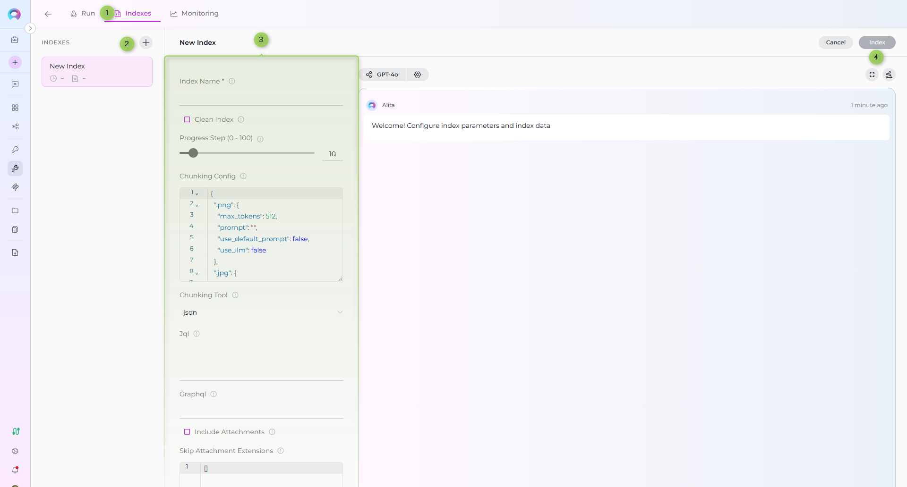
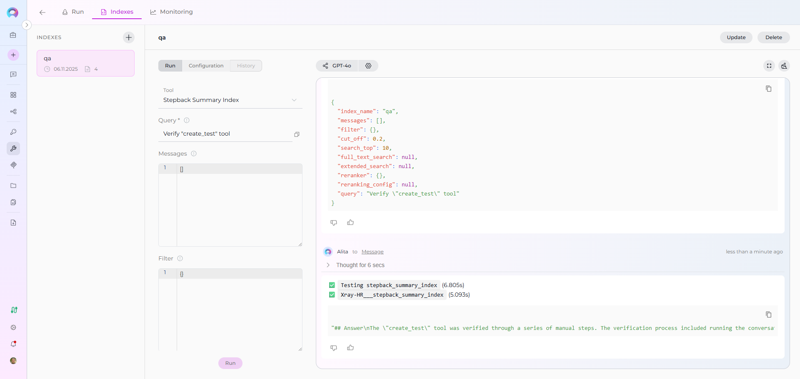

Index Xray Data¶
This guide provides a complete step-by-step walkthrough for indexing Xray Cloud data and then searching or chatting with the indexed content using ELITEA's AI-powered tools.
Overview¶
Xray Cloud indexing allows you to create searchable indexes from your Xray test management content:
- Test Cases: Detailed test procedures, manual test steps with actions, data, and expected results
- Test Types: Support for Manual, Cucumber/Gherkin, and Generic test types
- Test Metadata: Test keys, summaries, descriptions, test types, and custom fields
- Attachments: Screenshots, test files, documentation, and media attached to test steps
- Preconditions: Associated preconditions for test case setup requirements
What you can do with indexed Xray data:
- Semantic Search: Find test cases and procedures across projects using natural language queries
- Context-Aware Chat: Get AI-generated answers from your test documentation with citations to specific test cases
- Cross-Project Discovery: Search across multiple Xray projects and test types
- Test Analysis: Analyze testing patterns, coverage, and procedures for quality improvement
- Knowledge Extraction: Transform test documentation into searchable organizational knowledge
Common use cases:
- Finding similar test cases across projects to avoid duplication and ensure consistency
- Onboarding new QA team members by allowing them to ask questions about testing procedures and standards
- Analyzing test coverage gaps and identifying areas needing additional test cases
- Support teams searching for existing test procedures when investigating issues
- Test managers extracting insights from test documentation for reporting and process improvement
Prerequisites¶
Before indexing Xray data, ensure you have:
- Xray Credential: Xray Cloud API credentials with Client ID and Client Secret configured in ELITEA
- Vector Storage: PgVector selected in Settings → AI Configuration
- Embedding Model: Selected in AI Configuration (defaults available) → AI Configuration
- Xray Toolkit: Configured with your Xray Cloud instance details and credentials
Required Permissions¶
Your Xray credential needs appropriate permissions based on what you want to index:
For Content Access:
- Read access to Xray Cloud projects and test cases
- Permission to view the specific projects you want to index
For Comprehensive Indexing:
- Access to view test case attachments (if including attachments)
- Permission to view test steps and preconditions
- Access to both active and archived test cases (based on your requirements)
Authentication Method:
- Client Credentials: Client ID and Client Secret generated in Xray Cloud
Step-by-Step: Creating an Xray Credential¶
- Generate Xray API Credentials in your Xray Cloud account (API Keys → Generate Client ID and Client Secret)
- Create Credential in ELITEA: Navigate to Credentials → + Create → Xray → enter details and save
Detailed Instructions
For complete credential setup steps including API credential generation and security best practices, see:
Step-by-Step: Configure Xray Toolkit¶
- Create Toolkit: Navigate to Toolkits → + Create → XRAY Cloud
- Configure Settings: Set Xray Cloud base URL and assign your Xray credential
- Enable Tools: Select
Index Data,List Collections,Search Index,Stepback Search Index,Stepback Summary Index, andRemove Indextools - Save Configuration
Tool Overview:¶
- Index Data: Creates searchable indexes from Xray test cases and documentation
- List Collections: Lists all available collections/indexes to verify what's been indexed
- Search Index: Performs semantic search across indexed content using natural language queries
- Stepback Search Index: Advanced search that breaks down complex questions into simpler parts for better results
- Stepback Summary Index: Generates summaries and insights from search results across indexed content
- Remove Index: Deletes existing collections/indexes when you need to clean up or start fresh
Configuration Settings:¶
| Setting | Description | Example Value |
|---|---|---|
| Base URL | Xray Cloud instance URL | https://xray.cloud.getxray.app |
| Client ID | Xray API Client ID | Select from Secrets or enter directly |
| Client Secret | Xray API Client Secret | Select from Secrets or enter directly |
Xray Cloud URL
The default Xray Cloud base URL is https://xray.cloud.getxray.app. Use this unless you have a custom Xray instance.
Step-by-Step: Index Xray Data¶
Primary Interface
All indexing operations are performed via the Indexes Tab Interface. This dedicated interface provides comprehensive index management with visual status indicators, real-time progress monitoring, and integrated search capabilities.
Requirements
Before proceeding, ensure your project has PgVector and Embedding Model configured in Settings → AI Configuration, and your Xray toolkit has the Index Data tool enabled.
Step 1: Access the Interface¶
- Navigate to Toolkits: Go to Toolkits in the main navigation
- Select Your Xray Toolkit: Choose your configured Xray toolkit from the list
- Open Indexes Tab: Click on the Indexes tab in the toolkit detail view
If the tab is disabled or not visible, verify that:
- PgVector and Embedding Model are configured in Settings → AI Configuration
- The Index Data tool is enabled in your toolkit configuration
Step 2: Create a New Index¶
- Click Create New Index: In the Indexes sidebar, click the + Create New Index button
- New Index Form: The center panel displays the new index creation form
Step 3: Configure Index Parameters¶
Fill in the required and optional parameters for your Xray indexing:
| Parameter | Required | Description | Example Value |
|---|---|---|---|
| Index Name | ✓ | Suffix for collection name (max 7 chars) | tests or qa |
| Clean Index | ✗ | Remove existing index data before re-indexing | ✓ (checked) or ✗ (unchecked) |
| Progress Step (0 - 100) | ✗ | Step size for progress reporting during indexing | 10 (default) |
| Chunking Config | ✗ | Configuration settings for content chunking | {"chunk_size": 4000, "chunk_overlap": 200} |
| Chunking Tool | ✗ | Method for splitting content into chunks | json (default) |
| jql | ✗ | JQL query for searching test cases in Xray | project = "CALC" AND testType = "Manual" |
| graphql | ✗ | Custom GraphQL query for advanced data extraction | See examples below |
| include_attachments | ✗ | Whether to include attachment content in indexing | ✓ (checked) or ✗ (unchecked) |
| skip_attachment_extensions | ✗ | File extensions to skip when processing attachments | [".exe", ".zip", ".bin"] |
JQL or GraphQL Required
You must provide either jql or graphql parameter, but not both. Use JQL for standard queries and GraphQL for advanced custom queries.

JQL Query Examples¶
Standard JQL query syntax for filtering Xray test cases:
project = "CALC" AND testType = "Manual"
project = "CALC" AND labels in ("Smoke", "Regression")
project = "CALC" AND summary ~ "login"
project = "CALC" AND testType = "Manual" AND labels in ("Smoke", "Critical")
Supported JQL fields:
| Field | Description | Example |
|---|---|---|
project |
Project key filter | project = "CALC" |
testType |
Filter by test type | testType = "Manual" |
labels |
Filter by labels | labels = "Smoke" or labels in ("Smoke", "Regression") |
summary |
Search in test summary | summary ~ "login" |
description |
Search in test description | description ~ "authentication" |
status |
Filter by test status | status = "Active" |
priority |
Filter by test priority | priority = "High" |
GraphQL Query Examples¶
Custom GraphQL queries for advanced data extraction:
query {
getTests(jql: "project = \"CALC\"") {
results {
issueId
jira(fields: ["key"])
testType { name }
steps { action result }
}
}
}
query {
getTests(jql: "project = \"CALC\"") {
results {
issueId
jira(fields: ["key", "summary", "description", "created"])
testType { name kind }
steps {
id
action
data
result
attachments {
id
filename
downloadLink
}
}
}
}
}
Step 4: Start Indexing¶
- Form Validation: The Index button remains inactive until all required fields are filled
- Review Configuration: Verify all parameters are correct
- Click Index Button: Start the indexing process
- Monitor Progress: Watch real-time updates with visual indicators:
- 🔄 In Progress: Indexing is currently running
- ✅ Completed: Indexing finished successfully
- ❌ Failed: Indexing encountered an error
Alternative: Test Settings Method
For quick testing and validation, you can also use the Test Settings panel on the right side of the toolkit detail page. Select a model, choose the Index Data tool from the dropdown, configure parameters, and click Run Tool. However, the Indexes Tab Interface is the recommended approach for comprehensive index management.
Step 5: Verify Index Creation¶
After indexing completes, verify the index was created successfully:
- Check Index Status: Visual indicators show completion status
- Review Index Details: Click on the created index to see metadata and document count
- Test Search: Use the Run tab to test search functionality with sample queries

Step 6: Search Your Indexed Data¶
Direct Search via Indexes Tab:
- Access Indexes Tab: Navigate to your Xray toolkit → Indexes tab
- Select Index: Click on your created index from the sidebar
- Open Run Tab: Click the Run tab in the center panel
- Choose Search Tool: Select from available search tools:
- Search Index: Basic semantic search
- Stepback Search Index: Advanced search with question breakdown
- Stepback Summary Index: Summarized insights from search results
- Enter Query: Type your natural language question
- View Results: See responses with citations to specific test cases

Real-Life Example: Indexing Calculator Project Tests¶
Scenario: You have a QA team with comprehensive test documentation in Xray Cloud for a calculator application. You want to make all test cases, procedures, and testing knowledge searchable for team collaboration and knowledge sharing.
Indexing Steps:
-
Configure Xray Toolkit:
- Base URL:
https://xray.cloud.getxray.app - Client ID: Generated from Xray Cloud API Keys
- Client Secret: Generated from Xray Cloud API Keys
- Base URL:
-
Index All Manual Tests:
- JQL:
project = "CALC" AND testType = "Manual" - Collection suffix:
manual - Progress Step:
10(report every 10 test cases) - Clean Index: ✓ (for fresh start)
- Include Attachments: ✓ (for test screenshots and documentation)
- Skip Attachment Extensions:
[".exe", ".zip"] - Chunking Tool:
json
- JQL:
-
Index Smoke Tests (Optional):
- JQL:
project = "CALC" AND labels in ("Smoke", "Critical") - Collection suffix:
smoke - Include Attachments: ✓
- JQL:
-
Index Specific Test Type (Optional):
- JQL:
project = "CALC" AND testType = "Cucumber" - Collection suffix:
bdd - Include Attachments: ✗ (Cucumber tests use text-based Gherkin)
- JQL:
-
Verify indexing:
- Use "List Collections" tool to confirm collections exist
- Expected collections:
manual,smoke,bdd - Check indexing output for test case processing confirmation
After indexing, you can search for:
- Feature-specific tests: "Find all test cases for addition functionality"
- Test type queries: "What are the steps to test division by zero?"
- Cross-functional testing: "Show me test cases that verify scientific calculator functions"
- Test coverage analysis: "Are there tests for negative number operations?"
- Precondition checks: "What preconditions are needed for advanced calculation tests?"
Search and Chat with Indexed Data¶
Once your Xray data is indexed, you can use it in multiple ways:
Using Toolkit in Conversations and Agents¶
Your Xray toolkit can be used in two main contexts:
- In Conversations: Add the toolkit as a participant to ask questions and search your indexed Xray data
- In Agents: Include the toolkit when creating AI agents to give them access to your Xray test data
How to use:
- Start a New Conversation or Create an Agent
- Add Toolkit as Participant: Select your Xray toolkit from the available toolkits
- Ask Natural Language Questions: The toolkit will automatically search your indexed data and provide relevant answers with citations
Real-Life Example Workflow¶
Let's walk through a complete example of indexing and using a calculator project's Xray data:
Step 1: Setup Xray Toolkit for Calculator Project
Step 2: Use in Conversations
Add toolkit to a conversation and start asking questions:
- Navigate to Conversations → + New Conversation
- In the participants section click + to add Toolkit
- Select your Xray toolkit from the available toolkits list
Step 3: Index the Project Tests
-
User Request in Chat:
"Index all manual tests from project CALC with suffix 'manual'. Include attachments but skip .exe and .zip files. Clean any existing index first."
Step 4: Verify Index Creation
-
User Request in Chat:
"List my collections"
-
Xray Toolkit Response:
This confirms the indexing completed successfully and your project collection is available for searching.
Step 5: Start the conversation and begin asking questions about your indexed content
-
User: "What are the test steps for verifying addition operations?"
-
Xray Toolkit: "Based on your indexed test data, here are the test steps for addition:
-
CALC-123: Basic Addition Test
- Action: Enter first number (e.g., 5)
- Data: First operand
- Result: Number displayed on screen
- Action: Click addition operator (+)
- Result: Operator registered
- Action: Enter second number (e.g., 3)
- Data: Second operand
- Result: Number displayed
- Action: Click equals (=)
- Result: Result shows 8
-
CALC-156: Negative Number Addition
- Action: Enter negative number (e.g., -10)
- Result: Negative sign displayed
- Action: Click addition operator (+)
- Action: Enter positive number (e.g., 5)
- Result: Result shows -5
-
Sources: CALC-123 (Test Type: Manual), CALC-156 (Test Type: Manual, Labels: Smoke)"
Attachment Handling¶
When include_attachments is enabled, Xray indexing processes attachments from test steps:
Attachment Processing¶
- Extraction: Attachments are extracted from test step definitions
- Filtering: Extensions in
skip_attachment_extensionsare skipped - Content Extraction: Supported file types have their content extracted and indexed
- Linking: Attachments are linked to parent test cases via metadata
Supported Attachment Types¶
The indexing process can extract content from:
- Text files: .txt, .md, .csv
- Documents: .pdf, .doc, .docx
- Images: .png, .jpg, .gif (OCR if configured)
- Other: Various file formats based on available parsers
Example Configuration¶
To index tests with attachments but skip large binary files:
include_attachments: true
skip_attachment_extensions: [".exe", ".zip", ".bin", ".iso", ".dmg"]
Metadata and Search Fields¶
Each indexed test case includes metadata fields that enable rich searching:
| Field | Description | Example Value |
|---|---|---|
doctype |
Document type identifier | xray_test |
key |
Jira issue key for the test | CALC-123 |
summary |
Test case summary/title | Verify basic addition functionality |
issueId |
Internal Xray issue ID | 12345 |
projectId |
Xray project ID | 10001 |
testType |
Type of test (Manual, Cucumber, Generic) | Manual |
testKind |
Kind classification | test |
created_on |
Test creation timestamp | 2024-01-15T10:30:00Z |
assignee |
Assigned QA engineer | john.doe@company.com |
reporter |
Test creator | jane.smith@company.com |
These metadata fields are searchable and used for filtering and citation in search results.
Troubleshooting¶
Common Issues and Solutions¶
Issue: "Either 'jql' or 'graphql' parameter must be provided"
- Cause: Neither JQL nor GraphQL query was specified in indexing parameters
- Solution: Provide either a
jqlquery (e.g.,project = "CALC") or agraphqlquery in the index configuration
Issue: "Please provide either 'jql' or 'graphql', not both"
- Cause: Both JQL and GraphQL parameters were provided simultaneously
- Solution: Choose one query method and remove the other parameter
Issue: "No test data found in GraphQL response"
- Cause: Custom GraphQL query did not return test data in expected format
- Solution: Verify your GraphQL query returns test objects with fields like
issueId,jira,testType, andsteps
Issue: "Authentication failed: 401 Unauthorized"
- Cause: Invalid or expired Client ID/Client Secret credentials
- Solution: Regenerate API credentials in Xray Cloud and update your ELITEA credential configuration
Issue: Attachments not being indexed
- Cause:
include_attachmentsnot enabled or all extensions are filtered - Solution: Enable
include_attachments: trueand reviewskip_attachment_extensionslist
Issue: Slow indexing performance
- Cause: Large number of attachments or large attachment files
- Solution: Use
skip_attachment_extensionsto filter out large or unnecessary file types (e.g., videos, large images)
Issue: Poor search results or no relevant results found
- Cause: Search Cut Off score is too high, filtering out potentially relevant results
- Solution: Adjust the Cut Off score in your search tool configuration. Lower values (e.g., 0.3-0.5) return more results, higher values (e.g., 0.7-0.9) return only highly relevant matches. Start with a lower Cut Off and gradually increase if too many irrelevant results appear.
Best Practices¶
Indexing Strategy¶
- Start Small: Begin with a single project or test type to validate configuration
- Filter Wisely: Use JQL to index only relevant test cases (active tests, specific labels)
- Clean Indexes: Enable
clean_indexwhen re-indexing to avoid duplicates - Monitor Progress: Use appropriate
progress_stepvalues (5-20) for visibility
Query Optimization¶
- Use JQL for Standard Queries: JQL is simpler and sufficient for most use cases
- Use GraphQL for Complex Needs: GraphQL allows custom field selection and nested data
- Combine Filters: Use multiple JQL conditions to narrow results (project + testType + labels)
Attachment Management¶
- Skip Binary Files: Always exclude executables, archives, and system files
- Skip Large Images: Consider skipping high-resolution images or videos
- Target Useful Content: Index PDFs, docs, and screenshots that contain searchable content
Collection Naming¶
- Use Descriptive Suffixes: Choose meaningful 7-character suffixes (
manual,smoke,regress) - Separate by Purpose: Create different indexes for different test categories or projects
- Document Conventions: Maintain a naming convention guide for your team
Additional Resources¶
Related Documentation
- Indexing Overview - Comprehensive guide to ELITEA indexing
- Indexing Tools Reference - Complete toolkit settings and parameters
- Using the Indexes Tab Interface - Detailed interface guide
- Toolkits Menu - General toolkit management
- Create a Credential - Credential setup guide
- Xray Credential Setup - Xray-specific credential configuration